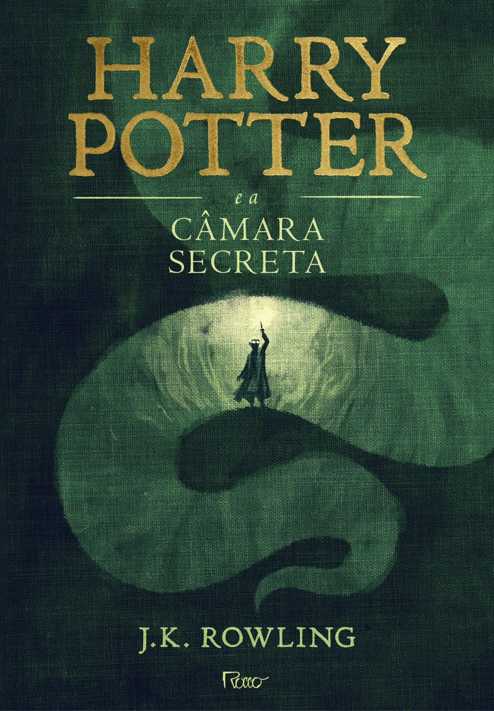

Harry Potter e a Câmara Secreta acompanha Harry Potter em seu segundo ano na escola de magia de Hogwarts. Logo no início, acontecimentos estranhos começam a ocorrer: alunos são encontrados petrificados e mensagens misteriosas aparecem nas paredes dizendo que a lendária Câmara Secreta foi aberta. Harry, junto com seus amigos Rony Weasley e Hermione Granger, tenta descobrir quem está por trás dos ataques e qual criatura está causando o perigo. Durante a investigação, Harry também enfrenta suspeitas e descobre mais sobre sua ligação com o passado sombrio de Lord Voldemort. No final, Harry encontra a Câmara Secreta e precisa enfrentar o verdadeiro responsável pelos ataques, salvando Hogwarts e provando mais uma vez sua coragem no mundo bruxo.